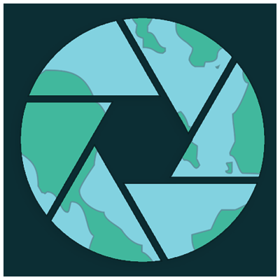

SilverNote is a music label created by Nescol. I created a series of digital media images for their website and created promotional material for their event.
EXY is a fictional E-Business idea I created for my first year HND class. The idea for the business was to sell smart glasses that would display the time, play music and read notificaitons to the user.

Beyond the Lens was an app idea that I created along with a few of my classmates. It was an app centered around photography, and the idea that you could use AR to collect polaroid images that you would find in different locations and add them to your personal gallery.

With photography, I am always going out with my camera to capture moments around Aberdeen, which I tend to use to create mini projects of different styles and ideas.